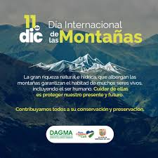

AGOSTO 9
En 1992 se celebró la primera reunión del Grupo de Trabajo Sobre Poblaciones Indígenas, de la Subcomisión de Prevención de Discriminaciones y protección a las Minorías de las Naciones Unidas.
AGOSTO 29
El 2 de diciembre de 2009, la Asamblea General aprobó por unanimidad la resolución 64/35 declarando el 29 de agosto Día Internacional contra los Ensayos Nucleares.
SEPTIEMBRE 7
El Día Internacional del Aire Limpio para un cielo azul (Día del Aire Limpio) reconoce la importancia de reducir la contaminación del aire, el mayor riesgo para la salud ambiental a nivel mundial y una de las principales causas evitables de muerte y enfermedad a nivel mundial.
SEPTIEMBRE 16
En 1994 la Asamblea General de las Naciones Unidas proclamó el 16 de septiembre como el Día Internacional de la Preservación de la Capa de Ozono, para conmemorar el día en que se firmó el Protocolo de Montreal, relativo a las sustancias que agotan la capa de ozono.
SEPTIEMBRE 29
la Asamblea General de Naciones Unidas declaró el 29 de septiembre como Día Internacional de Concienciación sobre la Pérdida y el Desperdicio de Alimentos, con el objetivo de concienciar y sensibilizar sobre la importancia de reducir la pérdida y el desperdicio de alimentos y la contribución de esas .
OCTUBRE 3
El Día Mundial de la Protección de la Naturaleza se celebra cada año el 18 de octubre cuyo objetivo principal es concienciar a la población mundial en lo relacionado a la protección del planeta. Es decir, motivar la responsabilidad ambiental sobre la protección del medioambiente, además del cuidado de los espacios
OCTUBRE 24
Cada 24 de octubre se conmemora en todo el mundo el Día Internacional contra el Cambio Climático. Una celebración instaurada por la ONU, debido a los grandes estragos que se están desatando en el planeta debido al cambio climático.
NOVIEMBRE 6
Para concienciar sobre este importante asunto, la Asamblea General declaró el 6 de noviembre de 2001 como Día Internacional para la prevención de la explotación del medio ambiente en la guerra y los conflictos armados.
DICIEMBRE 6
Es un día que conmemora a las víctimas de la tragedia de Bhopal y supone una llamada de atención sobre las graves consecuencias medioambientales y para la salud por el uso de agroquímicos.
DICIEMBRE 11
El Día Internacional de las Montañas es una oportunidad para crear conciencia de la importancia que tienen las montañas para la vida; de señalar las oportunidades y las limitaciones que afronta el desarrollo de las zonas montañosas, y de crear alianzas que produzcan un cambio positivo en las montañas y las tierras .